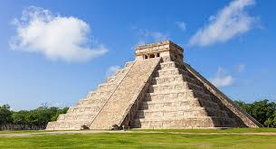

Chichen Itza
The
Chichen Itza
is a world famous complex of Mayan ruins on mexico's yucatan pennisula.
Chichen Itza Facts:
Chichen Itza means
"one mouth of the well of Itza"
No wheels were used to transport
el castillo"
which means
"The castle"
in Spanish.
the pre-columbian Maya civilisation made it betweenthe
9
th
to
12
th
centuries.
Chichen Itza was discovered in the
514 A.D.
by the Priest latin chan who was also called
Itzamna.
Chichen Itza is
24metres high.
,with an additional 6metres for the temple
Chichen Itza Images